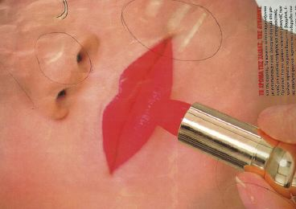
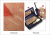
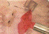
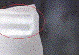
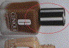
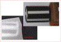
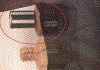

GEISTERN IM ROLLENOFFSET
|
Beim Geistern im Rollenoffset handelt es sich
um eine Fehlererscheinung, bei der sich ein
Druckmotiv der Rückseite auf der Vorderseite
abbildet. Das Geistern im Rollenoffset stellt ein
ästhetisches Problem dar, das zur
Unverkäuflichkeit der Drucke führt (Abb.
1).
|

|
Abb. 1: Geistern im Rollenoffset.
|
|
|
|
Mögliche Ursachen:
|
|
|
|
Abb. 2: Geistereffekt auf der Vorderseite.
|
|
|
|
|
|
Abb. 3: Rückseite der beanstandeten
Vorderseite.
|
|
|
|

|
|
Abb. 4: Vorderseite mit Geistereffekt und
dazugehörige Rückseite.
|
|
|
|

|
|
Abb. 5: Beanstandeter Druck im Durchlicht.
|
|
|
|

|
|
Abb. 6: Beanstandete Vorderseite.
|
|
|
|

|
|
Abb. 7: Rückseite.
|
|
|
|

|
|
Abb. 8: Vorder- und Rückseite.
|
|
|
|

|
|
Abb. 9: Druck im Durchlicht.
|
|
|
|
|
Zum gegenwärtigen Zeitpunkt existieren keine
gesicherten Erkenntnisse über die Ursachen von Geistern
im Rollenoffset.
Bei Befragung von Fachleuten über mögliche
Ursachen werden alle am Druckprozess genannten Parameter als
mögliche Verursacher genannt. Vor allem die
Zylindergeometrie der Drucktuchzylinder und die Stellung der
Zylinder zueinander bzw. der daraus resultierende
Abziehwinkel auf die Papierbahn scheinen dabei eine
große Rolle zu spielen. Weiterhin wird genannt, dass
das Geistern meist nach dem Reinigen der Drucktücher
nicht mehr auftritt und dann bei steigender
Auflagenhöhe - bis zum nächsten Reinigungsstop -
sich wieder verstärkt.
|
Mögliche Abhilfen:
|
|
Aus zahlreichen Untersuchungen und aus der Zusammenarbeit
der FOGRA mit Praktikern ist bekannt, dass folgende
Maßnahmen als Einzelmaßnahme oder in Kombination
der verschiedenen Möglichkeiten zu einer
Fehlerbeseitigung führen können:
- Papierwechsel
- Drucktuchwechsel
- Farbwechsel
- Veränderung des Feuchtmittelzusatzes
- Druck auf einem anderen Maschinensystem
Es ist aber auch gleichzeitig darauf hinzuweisen, dass zum
gegenwärtigen Zeitpunkt keine konkreten Angaben
über eine gezielte Ursachenbeseitigung möglich
sind.
Die spezifische Fehlerursache ist von Fall zu Fall durch
Einzelversuche zu eruieren.
|
Beispiel(e):
|
|
Beim Druck eines vierfarbigen Kosmetikprospektes im
Rollenoffset trat Geistern auf. Die Abbildung 2 zeigt den
beanstandeten Effekt auf der Vorderseite, die Abbildung 3
den dazugehörigen Rückseitendruck. Die Abbildung 4
zeigt den beanstandeten Druck auf der Vorderseite und die
dazugehörige Rückseite direkt
gegenübergestellt. Auf der Vorderseite zeigen sich
dabei deutlich „geisternde“ Motivteile des
Schminkkästchens. In der Abbildung 5 ist der
beanstandete Druckbogen im Durchlicht zu sehen. Aus den
verschiedenen Abbildungen wird deutlich, dass das Geistern
auf der Vorderseite dort auftritt, wo bestimmte Motive auf
der Rückseite gegenüberstehen. Gleichzeitig wird
auch die Komplexität dieses Themas deutlich, weil sich
aus dem Aussehen der auf der Rückseite gedruckten
Motive und der „Geistererscheinung“ auf der
Vorderseite keine Regelmäßigkeiten ableiten
lassen. Das heißt, dass innerhalb einer Seite im
Format DIN A4 ähnliche bzw. fast identische Motive auf
der Rückseite die „Geistererscheinungen“ auf
der Vorderseite hervorrufen oder auch nicht. In diesem
Praxisfall war es nicht möglich, durch gezielte
Veränderungen der Prozessparameter ein
zufriedenstellendes Ergebnis zu erzielen bzw. die Ursachen
für das Geistern herauszufinden.
Der Druckauftrag konnte erst auf einer anderen Druckmaschine
unter Verwendung anderer Druckfarben bei gleicher
Papiersorte ohne Probleme gedruckt werden.
Bei einem ähnlich gelagerten Reklamationsfall zeigten
sich auf der beanstandeten Vorderseite (Abb. 6) schemenhaft
die Druckkonturen einer Verschlusskappe eines
Makeup-Behälters (Abb. 7). In der Abbildung 8 sind die
Vorder- und Rückseite noch einmal zum besseren
Verständnis gegenübergestellt. Die Abbildung 9
zeigt den reklamierten Druckbogen im Durchlicht. Laut
Angaben des Druckers konnte der Druckfehler durch einen
Papierwechsel beseitigt werden.
|
Allgemeine Hinweise:
|
|
Für den Reklamationsfall:
Es existiert z. Zt. keine Möglichkeit, um das Geistern
im Labor nachstellen zu können. Anhand von Papier- und
Druckfarbenmustern können nur vergleichende
Bedruckbarkeitstests vorgenommen werden, um die
entsprechenden Materialien zu vergleichen. Für diese
Untersuchungen sind unbedruckte Papiermuster und
Druckfarbenproben sowie entsprechende Vergleichsmaterialien
erforderlich.
Druckausfallmuster nach unterschiedlichen Auflagenhöhen
sicherstellen.
Produktionsparameter protokollieren.
|
|
|
|
|
|
|
Kontakt:
pantel@fogra.org
|
Gei-pan-200112
|